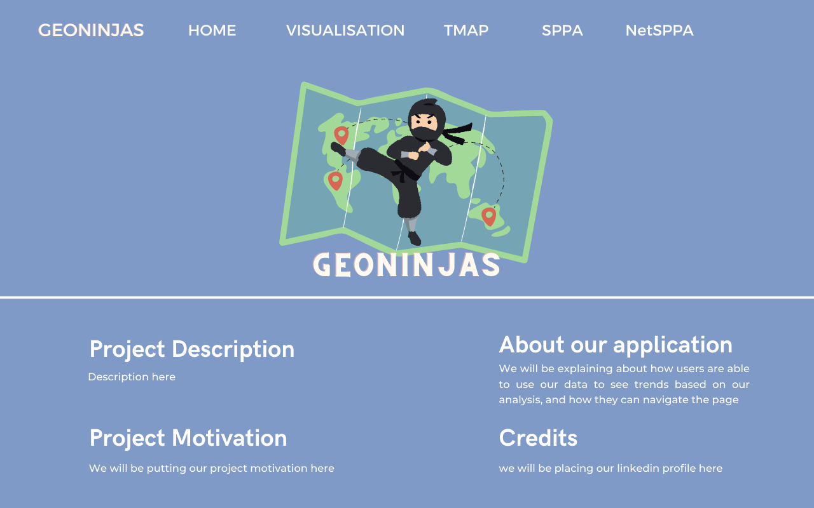
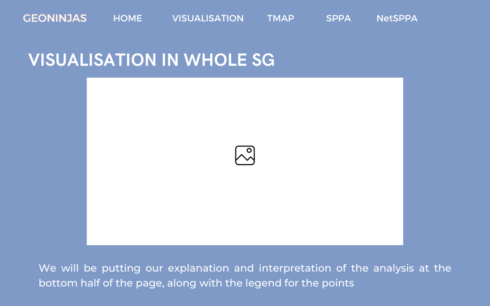
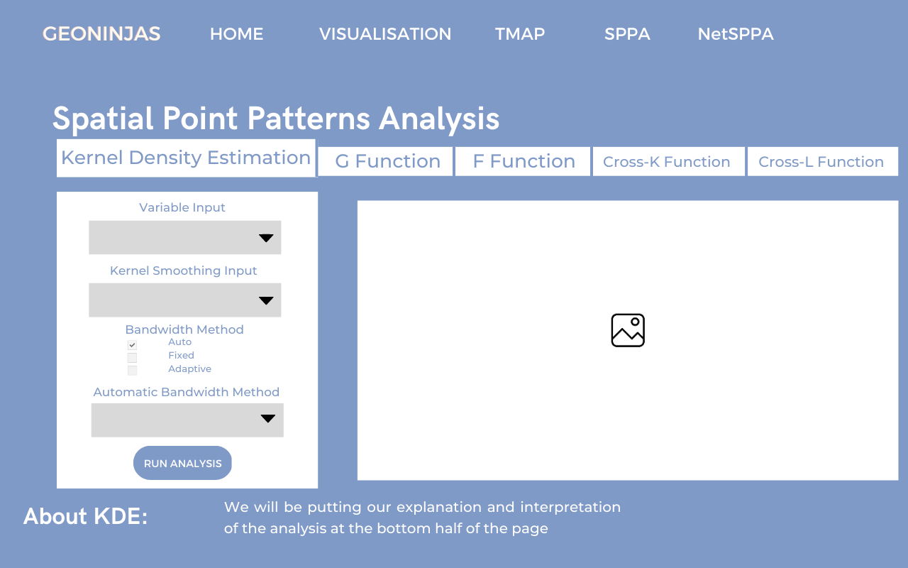
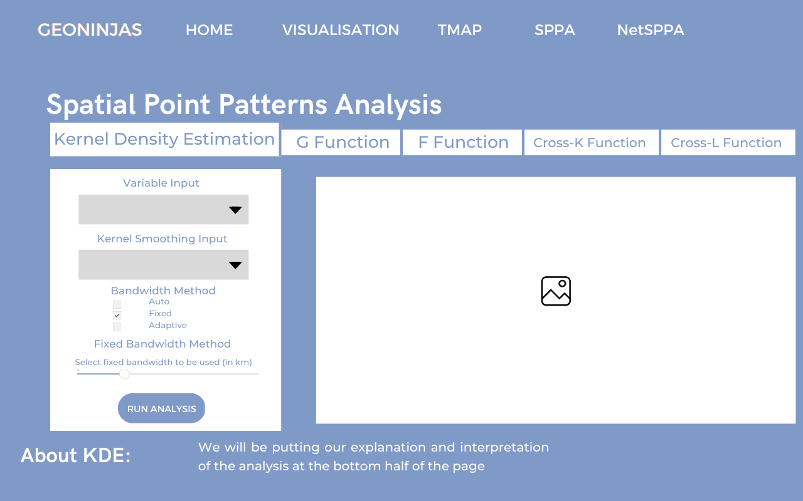
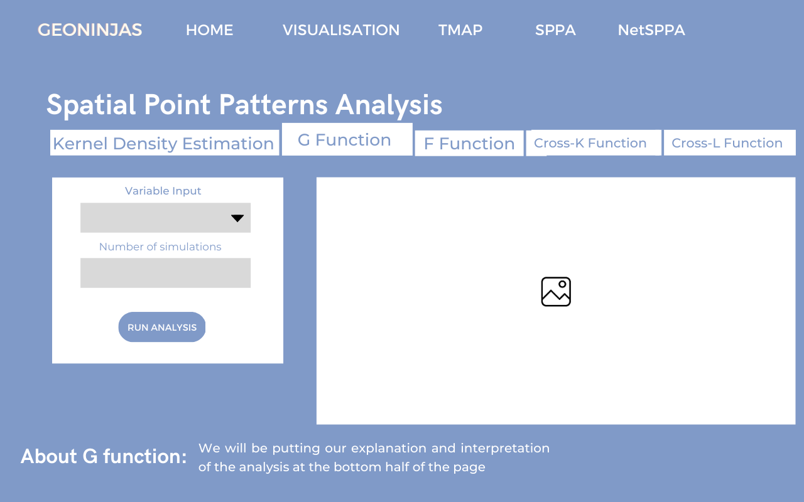
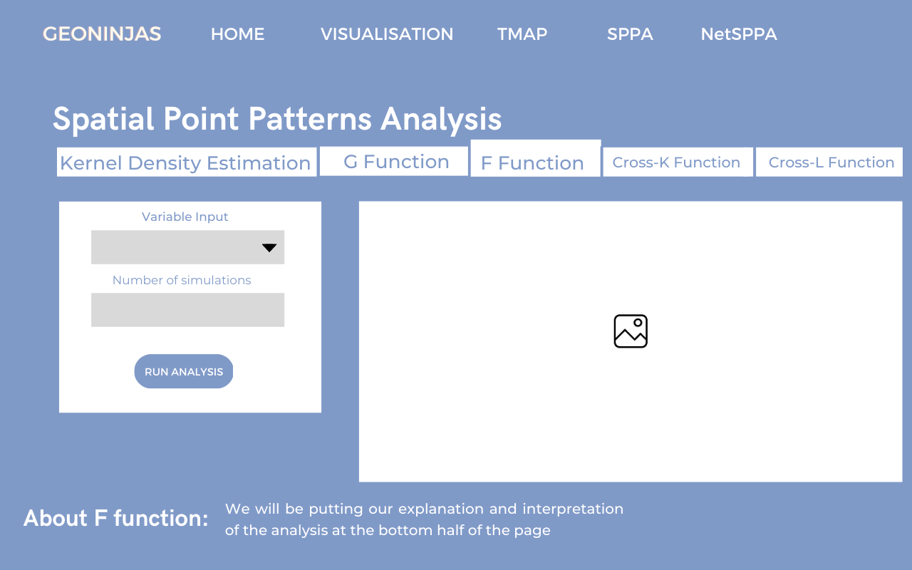

Overview
1 Theme
The theme we would like to explore is Spatial Point Patterns Analysis.
2 Abstract
Spatial point patterns analysis (SPPA) studies the distribution of the points, whether the distribution is random or clustered. This form of analysis can be very useful in the evaluation of events and we would be able to investigate whether there are any dependency relationships between different point distributions to make a comparison and conclusion.
Another kind of spatial point patterns analysis is called network constrained spatial point patterns analysis (NetSPPA) which allows us to analyse if the distribution of the spatial point events are affected by a network or whether the spatial point events occur alongside a network.
The application our team developed allows tourists, policy makers and community members to visualise and analyse the distribution of Airbnb listings in Singapore on a map. The app can be used to help better understand the impact of Airbnbs on the local housing market, improve urban planning and enhance tourism development. With our app, users can select and modify their inputs to conduct both SPPA and NetSPPA.
For spatial point patterns analysis, we would like to find out if the Airbnb locations in Singapore are randomly distributed throughout the country and if not, where are the locations with higher concentrations of Airbnb. Also, at these locations of higher concentration, do the Airbnb locations co-exist with other point events like train stations, hotels, etc.? Users can use Kernel Density Estimation, G-Function, F-Function, Cross K-Function and Cross L-Function.
For network constrained spatial point patterns analysis, we would like to discover whether the distribution of the Airbnb locations are affected by the road network in Singapore. Through these analyses, we can investigate whether the distribution of Airbnb locations in Singapore are affected by point events or the road network. Users can use Network Kernel Density Estimation, K-Function and Network Cross K-Function.
3 Problem & Motivation
Our team decided to develop an application that allows users to analyse Airbnb listings in Singapore and their relationships with other points of interest (MRTs, bus stops etc.) as there is a lack of such apps for Singapore Airbnb listings.
After the COVID pandemic, with travelling becoming the norm and Singapore as one of the most popular cities to travel to in the world, Singapore Airbnb listing information would deem to be extremely valuable. Moreover, with the high cost of living in Singapore, many tourists would turn to cheaper accommodation options like Airbnb rentals.
In order to provide a good accommodation experience for such tourists, it is crucial to analyse the current Airbnb listings in Singapore to study the regions where Airbnb listings are most prevalent and why.
4 Project Objectives
In this project, we would like our Shiny web application to help users:
- Visualise distributions and realise the benefits of spatial point patterns analysis
- Conduct spatial point patterns analysis (Kernel density estimation, G-Function, F-Function, Cross K-Function, Cross L-Function)
- Conduct network constrained spatial point patterns analysis (NetKDE and K-Function, Cross K-Function)
- Use all the insights gathered from the analysis and models to make practical decisions
5 Main Features
The main features for the analytical tools are:
- Spatial Point Patterns Analysis
- Filters
- Different variables for analysis
- Various bandwidth selection methods (diggle, CvL, scott, ppl)
- Various Kernel Methods (gaussian, epanechnikov, quartic, disc)
- Various Statistical Functions (G/F/Cross K/Cross L-Functions)
- Sliders
- For fixed bandwidth selection method
- Input
- Number of simulations
- Filters
- Network Constrained Spatial Point Patterns Analysis
- Filters
- Different variables for analysis
- Various kernel methods (gaussian, epanechnikov, quartic, disc)
- Various NKDE methods (simple, discontinuous, continuous)
- Input
- Number of simulations
- Filters
6 Data Sources
Spatial Point Patterns Analysis
- URA 2019 Master Plan Planning Subzone Boundary Data (.shp) - By Prof Kam in In Class Ex 9
- Airbnb Locations in Singapore (.csv) - We will get the point events via the longitude and latitude
- MRT Stations in Singapore (.shp)
- Bus Stops in Singapore (.shp)
- Tourist Attractions in Singapore (.shp)
- Shopping Malls in Singapore (.csv) - We will use this list of shopping mall names to get the point events using OneMapSG API
- 7-11 Stores in Singapore - We will extract the list of stores (name, address, postal) into xlsx, then locate their point events using OneMapSG API
- Hotel Locations in Singapore (.kml)
- Universities and Colleges in Singapore - We will extract the list of universities and colleges (name) into xlsx, then locate their point events using OneMapSG API
Network-Constrained Spatial Point Patterns Analysis
- Road Network of Singapore (Road Section Line) (.shp)
- Airbnb locations in Singapore (.csv) - We will get the point events via the longitude and latitude
7 Approach / Methodology
- Data Preparation
- Gather data from various sources
- Import geospatial and aspatial data
- Data wrangling
- Exploratory Data Analysis
- Visualisation of the data
- Checking for outliers, anomalies, missing values, noise
- Further data wrangling (if necessary)
- Spatial Point Patterns Analysis
- First-order analysis
- Kernel Density Estimation
- Second-order analysis
- G-Function
- F-Function
- Cross K-Function
- Cross L-Function
- First-order analysis
- Network Constrained Spatial Point Patterns Analysis
- First-order analysis
- NetKDE Analysis
- Second-order analysis
- K-Function
- Cross K-Function
- First-order analysis
8 Literature Review
8.2 Other Studies
Spatial Distribution of Airbnb Supply in Los Angeles
- Summary
- This study investigates the spatial patterns of Airbnb supply. In the city of Los Angeles during the years 2014 to 2019. This study integrates exploratory spatial data analysis (ESDA) and explores the determinants of spatial patterns of Airbnb supply in 2019 with spatial regression models. The results of the spatial autocorrelation analysis show that the spatial distribution of Airbnb supply in Los Angeles is positively clustered and shows a geographical logistical trend over time.
- This paper used socio-economic data including employment, population, income, education, and housing units.
- Learning Points
- ESDA (to describe spatial distribution + quantitative models)
- For quantitative models under ESDA, the paper covered Global Moran’s I statistic and the Anselin Local Moran’s I (LISA) statistic to measure spatial autocorrelation.
- Distance between points eg. the city center and Hollywood was calculated using GIS tools. The POI (point of interest) is a specific point location that someone may find useful or interesting, which to some extent can be used to determine the attractiveness of a place. The POI data were obtained from GEOFABRIK, where OpenStreetMap data was collected, showing a total of 5,424 POI in Los Angeles
- ESDA (to describe spatial distribution + quantitative models)
- Linking Back To The Project
- We could use the ESDA methods in the paper and explore the use of POI. The paper showed that Airbnb supply is positively associated with the number of POI.
Point Pattern Analysis on the 1854 cholera outbreak in London
- Summary
- This study talks about the methods Point Pattern Analysis (PPA) and focuses on a case study which is the 1854 cholera outbreak in London
- Learning Points
- PPA plays an important role in conducting exploratory analysis on point data
- Commonly used PPA methods are
- descriptive statistics,
- distance-based measures (nearest-neighbour distance, distance functions)
- and density-based measures (Quadrat density, Kernel density).
- Linking Back to the Project
- Like the study, we can implement distance-based measures like the distance functions (G/F/K Function) and also density-based measures (Kernel density) for our Spatial Point Patterns Analysis
Network constrained and classified spatial pattern analysis of healthcare facilities and their relationship with the road structure: a case study of Thiruvananthapuram city
- Summary
- Network-based location analysis was carried out to find the distribution pattern of the healthcare facilities in Thiruvananthapuram city and also the distribution of healthcare facilities with reference to the network distance (to know whether the distribution pattern of healthcare facilities is clustered or random, whether they tend to follow a specific direction or whether they are clustered around any specific point)
- Learning Points
- Centrographic analysis (using Mean Center, Standard Deviational Ellipse and Average Nearest Neighbour) was performed to study the distribution pattern of the healthcare facilities, whether the healthcare facilities locations have a relationship with the road network
- To find the distribution of medical stores with respect to the hospitals, cross K function was performed
- Kernel Density Estimation technique was applied to modify the centrality values and the vector points to a basic raster framework.
- ANN uses the distance between each point entity and its closest neighbouring entity to predict if the point pattern is random, clustered or dispersed.
- Linking Back to the Project
- We can implement cross K function to investigate the location of Airbnbs are influenced by the road network
- We could use the ANN ratio (average nearest neighbour ratio) to reveal if a point pattern is a clustered distribution. If the ratio >1, we can conclude that the pattern is more dispersed than random. A value of 1 indicates a random distribution. To check the statistical significance of the ANN ratio, we will calculate the z-score in order to conclude confidently if the pattern is indeed random, clustered or dispersion.
9 Storyboard
Home Page

Visualisation Page
Tmap Page

Spatial Point Patterns Analysis Page




Network Constrained Spatial Point Patterns Analysis Page
10 Application Architecture